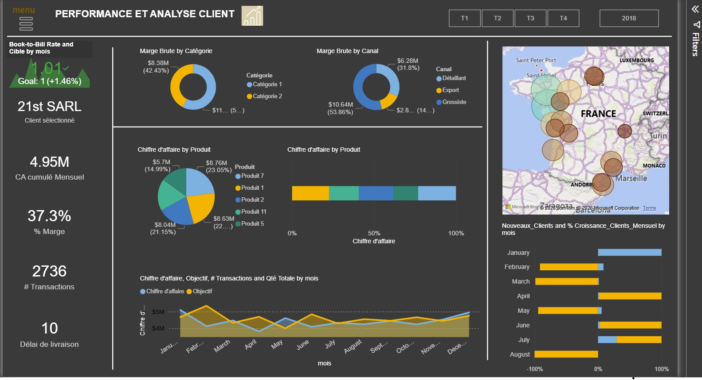
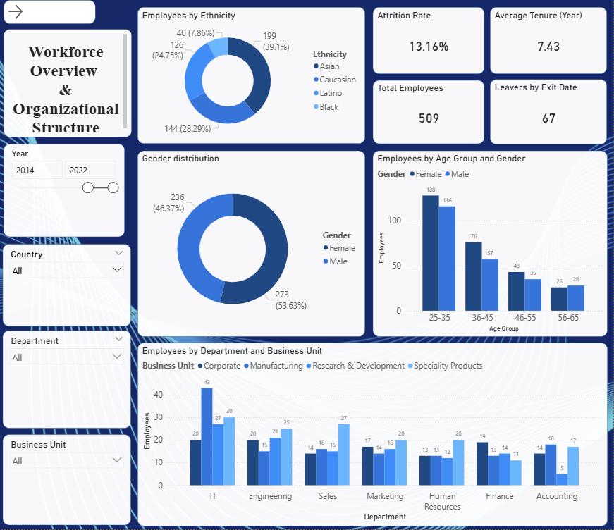

Pilotage stratégique
Rapport d'analyse de performance, Tableau de bord des ventes.
Indicateurs clés (Book-to-Bill, top produits, cartographie clients) pour orienter la stratégie commerciale.
Consultante en intelligence d'affaires, transformation numérique et intelligence artificielle pour PME et organismes
Bonjour! Je suis Djeny et j'accompagne les startups et PME dans la structuration de leurs indicateurs clés et la création de tableaux de bord stratégiques, afin de transformer leurs données en décisions éclairées et mesurables.
M.Sc. Intelligence d'affaires · Économie · Montréal
Articles, analyses et recherches sur la performance, les KPI et la prise de décision.
Des angles clairs et opérationnels pour mieux cadrer les rôles, les outils et les démarches analytiques.

Trois exemples de mandats clés, adaptés à la réalité opérationnelle des dirigeants et des équipes analytiques.

Indicateurs clés (Book-to-Bill, top produits, cartographie clients) pour orienter la stratégie commerciale.

Nettoyage, structuration et indicateurs fiables à partir de données RH extraites d’un système existant. Confidentialité, validation de la granularité et enrichissement du modèle pour une analyse organisationnelle pertinente.

Diagnostic opérationnel, engagement bénévole et modèles de financement durables au service d'une mission à fort impact social.
J'interviens à titre indépendant pour transformer vos données en leviers de décision.
Prendre des décisions sans une lecture claire des données, c'est avancer sans visibilité.
Je suis consultante en intelligence d'affaires, transformation numérique et intelligence artificielle. J'accompagne les PME, les organismes et les entreprises qui souhaitent mieux exploiter leurs données, optimiser leurs processus et prendre des décisions plus éclairées.
Aujourd'hui, à titre de conseillère en solutions technologiques chez Makila AI, j'accompagne des organisations dans des contextes variés : ressources humaines (RH), finances, ventes et marketing. J'interviens à chaque étape des projets : de l'analyse des besoins à la structuration des données, jusqu'à leur valorisation à travers des tableaux de bord, des analyses avancées, des formations et de la documentation, et des solutions d'intelligence artificielle.
Auparavant, j'ai accompagné pendant plus de trois ans des milliers de PME partout au Québec au sein de la Fédération canadienne de l'entreprise indépendante (FCEI). Cette expérience m'a permis de développer une compréhension approfondie des défis entrepreneuriaux, des enjeux de croissance et des besoins des dirigeants de petites et moyennes entreprises.
J'ai également réalisé un mandat de consultation comme cheffe de projet pour la Chambre de commerce et de l'industrie de la Vallée-du-Richelieu–Saint-Hyacinthe (CCIVS), où j'ai piloté des initiatives visant à mieux comprendre les besoins des entreprises membres, coordonné des projets, développé des ressources, organisé des webinaires et contribué à la mise en place d'outils favorisant le développement des PME.
Mon parcours comprend également une expérience internationale auprès de SOS Kitchen, en Thaïlande, où j'ai contribué à des projets d'analyse et d'amélioration organisationnelle dans un environnement multiculturel. Cette expérience m'a permis de développer une approche encore plus adaptable, collaborative et orientée vers l'innovation.
Titulaire d'une maîtrise en économie de l'Université de Montréal et d'une maîtrise en intelligence d'affaires de HEC Montréal, je combine une vision stratégique, une solide capacité d'analyse et une approche axée sur les résultats.
Aujourd'hui, je mets cette expertise au service des organisations qui souhaitent transformer leurs données en un véritable levier de performance. Que ce soit pour concevoir des tableaux de bord, optimiser des processus, intégrer des solutions d'intelligence artificielle ou accompagner la transformation numérique, mon objectif demeure le même : fournir des solutions concrètes qui créent une valeur durable.
Un échange stratégique permet d'identifier rapidement les leviers d'amélioration et les zones de manque de visibilité.
Vous savez déjà ce dont vous avez besoin
Vous avez d'abord une question